screenshot_0 · full
[2560, 1304] → [2560, 1304] · 保留像素 100.0% · 场景 0
原图与选区

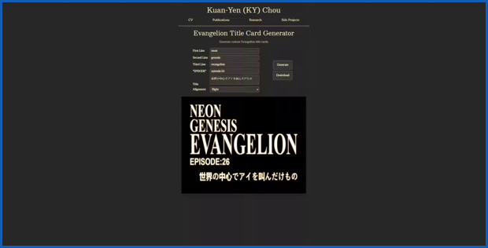
算法输出预览

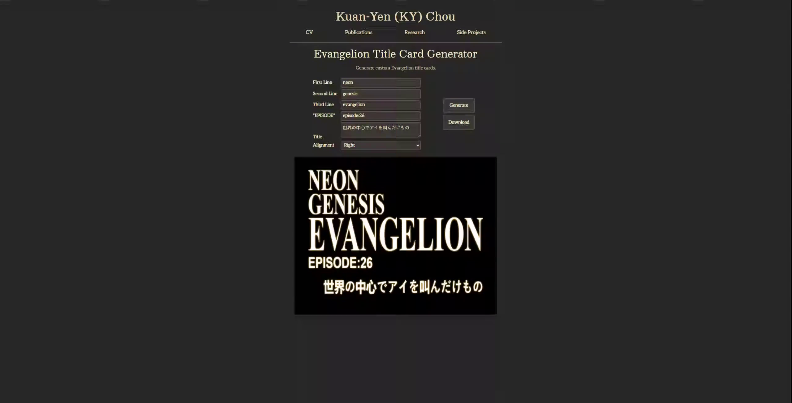
坐标：[0, 0, 2560, 1304] · 原因：first_screenshot
算法版本：experimental_theme_aware_per_step_v2。仅用于预览，生成流程未修改。
返回任务总览 · 查看全部步骤拼图 · 查看算法判断 JSON
左侧为原图预览和选区（绿色：裁剪；蓝色：保留整图），右侧为此算法的输出预览；实验版尚未用于生成。点击图片查看原尺寸；预览自动缩放。像素减少比例不等于 token 减少比例。
[2560, 1304] → [2560, 1304] · 保留像素 100.0% · 场景 0
原图与选区

算法输出预览

坐标：[0, 0, 2560, 1304] · 原因：first_screenshot
[2560, 1304] → [675, 964] · 保留像素 19.5% · 场景 0
原图与选区
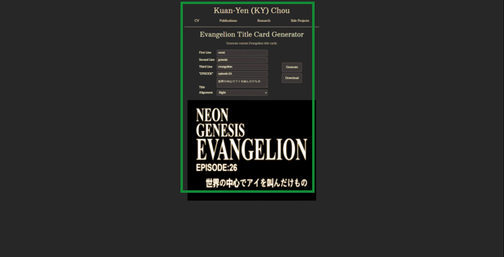
算法输出预览
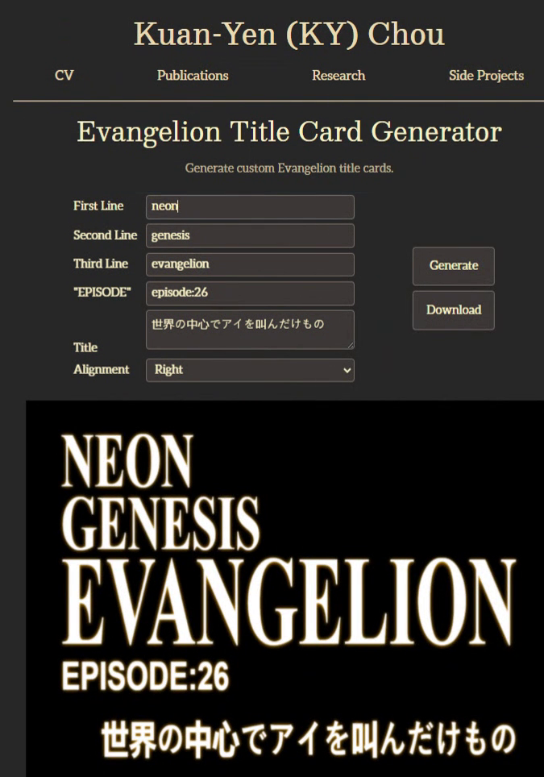
坐标：[920, 11, 1595, 975] · 原因：localized_change
[2560, 1304] → [83, 66] · 保留像素 0.2% · 场景 0
原图与选区
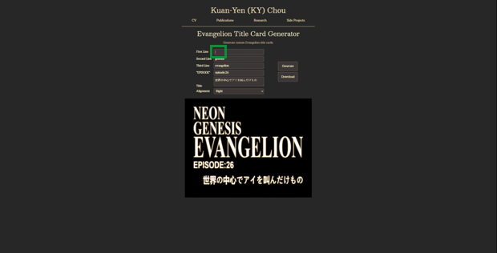
算法输出预览
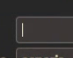
坐标：[1083, 234, 1166, 300] · 原因：localized_change
[2560, 1304] → [311, 82] · 保留像素 0.8% · 场景 0
原图与选区
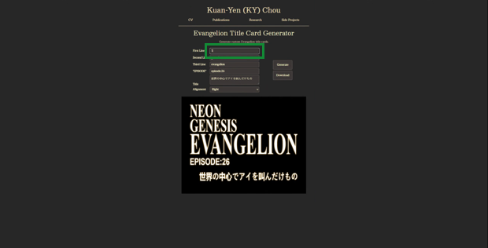
坐标：[1075, 227, 1386, 309] · 原因：localized_change
[2560, 1304] → [377, 109] · 保留像素 1.2% · 场景 0
原图与选区
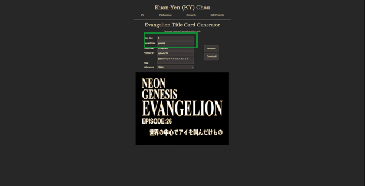
算法输出预览
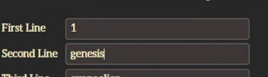
坐标：[1009, 227, 1386, 336] · 原因：localized_change
[2560, 1304] → [98, 65] · 保留像素 0.2% · 场景 0
原图与选区
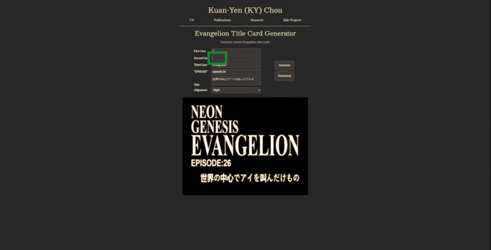
算法输出预览
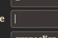
坐标：[1083, 271, 1181, 336] · 原因：localized_change
[2560, 1304] → [214, 103] · 保留像素 0.7% · 场景 0
原图与选区
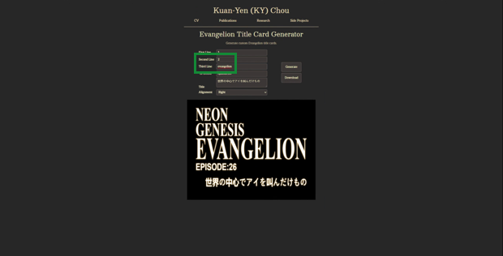
算法输出预览
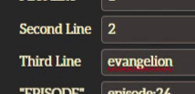
坐标：[990, 271, 1204, 374] · 原因：localized_change
[2560, 1304] → [120, 64] · 保留像素 0.2% · 场景 0
坐标：[1084, 310, 1204, 374] · 原因：localized_change
[2560, 1304] → [113, 65] · 保留像素 0.2% · 场景 0
原图与选区
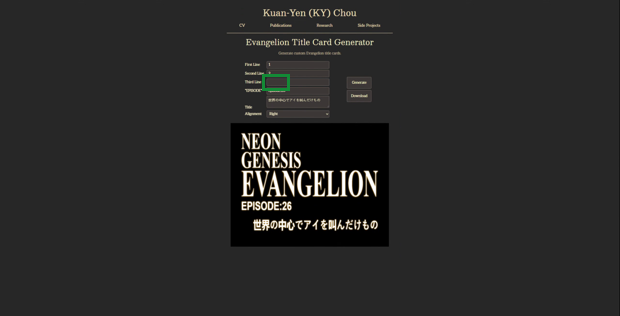
算法输出预览
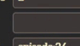
坐标：[1083, 307, 1196, 372] · 原因：localized_change
[2560, 1304] → [482, 100] · 保留像素 1.4% · 场景 0
原图与选区
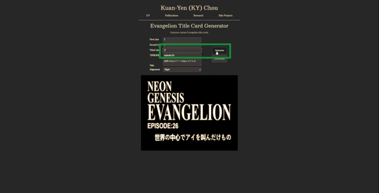
算法输出预览
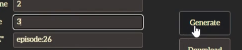
坐标：[1075, 295, 1557, 395] · 原因：localized_change
[2560, 1304] → [615, 545] · 保留像素 10.0% · 场景 0
原图与选区
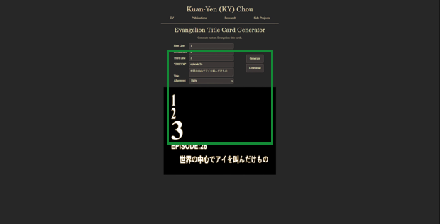
算法输出预览
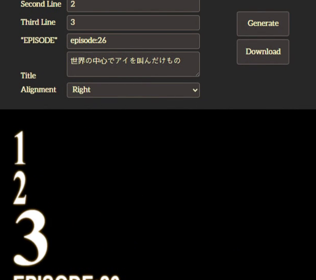
坐标：[971, 295, 1586, 840] · 原因：localized_change